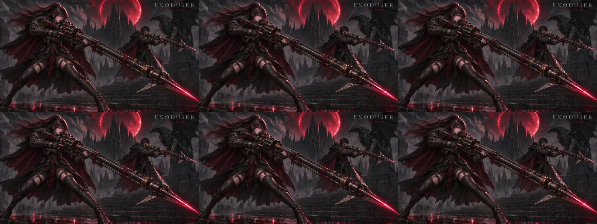

EXODUSER / HELL HUNTER / SEEDANCE 2.5
헬 헌터 · 잔잔한 대기 모션
붉은 천 정리 v3 기반 · 1080p · High · 5.04초 · 무음
고정 구도에서 미세한 호흡과 머리카락·망토 움직임만 요청했습니다. 발사와 총구 개폐 없이 양손 견착 자세를 유지하는 아이들 시안입니다.
실제 출력 1920×1080 · 24fps · 121프레임 · HEVC 약 20.5Mbps. 0~5초의 6개 표본 프레임에서 얼굴·그립·총기·제목의 주요 형태 유지와 작은 천 움직임을 확인했습니다. 세부 형상과 명암에는 미세한 변화가 있으며, 완벽한 무이음 반복은 보장하지 않습니다. 게임에는 아직 연결하지 않았습니다.
완성 1개 · 순사용 60크레딧. 첫 실패 요청의 60크레딧은 전액 환불됐습니다. 설정·전체 오더·검수 기록
구간별 프레임 확인 (왼쪽부터 0·1·2초 / 3·4·5초)
